Designed by cinema professionals
Intuitive Interactions
No user manual required to get started! Install, play and go live in one moment! Keyboard shortcuts can be customized too!
Multiple Formats
Support of Advanced SubStation Alpha (SSA, ASS, .ass), Subrip (.srt), DCP (.xml), and simple text (*.txt) subtitles.
Crash proof
Its robustness has been proven at hundreds of cinema festivals and operas since 2011 — subtitling should never fail in live!
Automatic & Manual
Its particular strength lies in the control of the projection, with a very good cooperation between automatic and manual modes.
Its semi-automatic mode without timecodes also allows to project supertitles at theaters (or opera, ballets, concerts, speeches, museums, guide tours, and any other live events…).
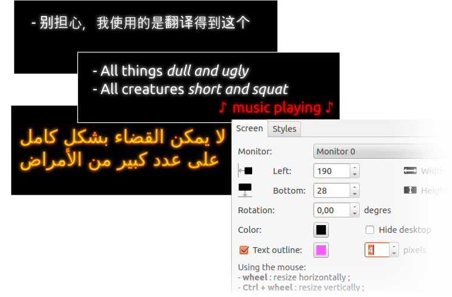
Slick appearance
Colors, fonts, size, outline, styles and multiple lines support allow to provide the best experience and readability.
It also supports advanced positioning, necessary to reproduce music, ambiance, dialogs and context for a multilingual, deaf or hearing impaired audience.
International character sets are supported too (Arabic, Chinese, Cyrillic, Greek…)
Used worldwide
"Our association is focused on events for hearing impaired: Subtivals is the best tool for accessibility!"
Camille — Sens Dessus Dessous (France)
"Using Subtivals feels like driving a convertible Mustang!"
Francisco Baudet — Professional subtitler (France)
"We are very happy to have found your software, last year we did everything manually… that was a nightmare!"
Tom Lukaszewicz — BLACK BEAR FILMFEST (Poland)
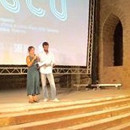
"We've found it so much more practical than any other tool we had ever tried."
Simona Marino — Sud.titles (Italy)
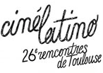
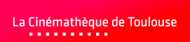
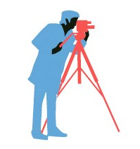
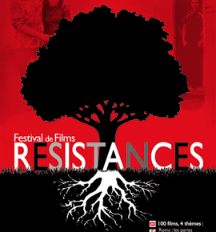
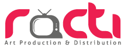
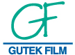
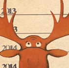
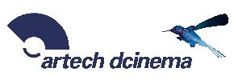
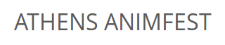
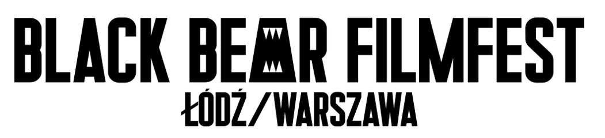
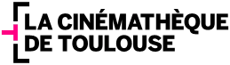
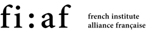
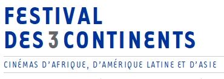
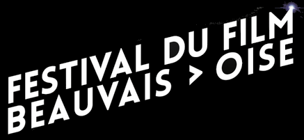
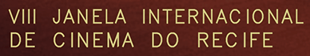
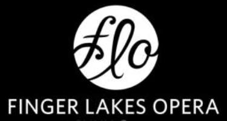
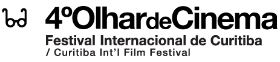
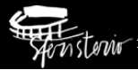
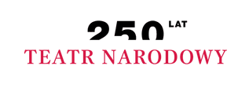
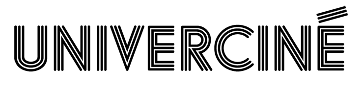
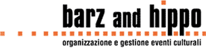
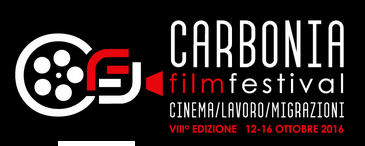
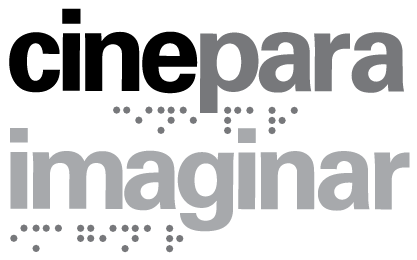
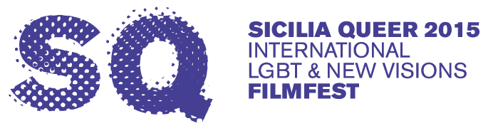
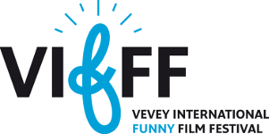

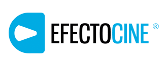
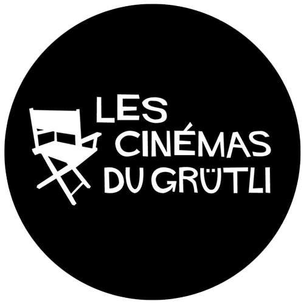
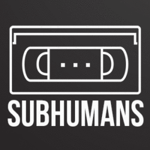
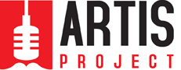
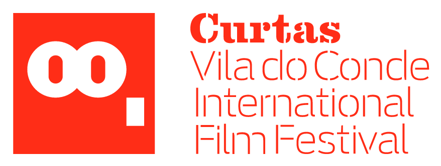
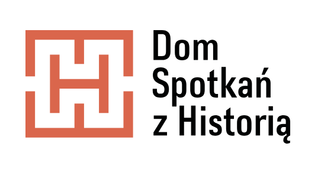
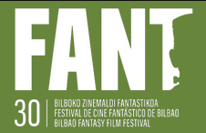
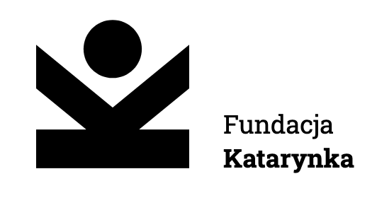
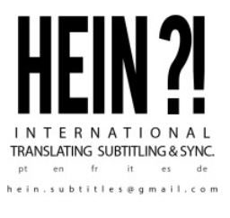
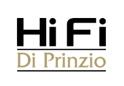
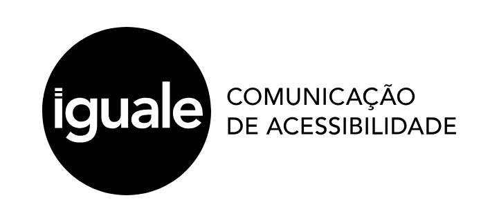
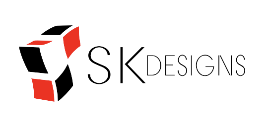
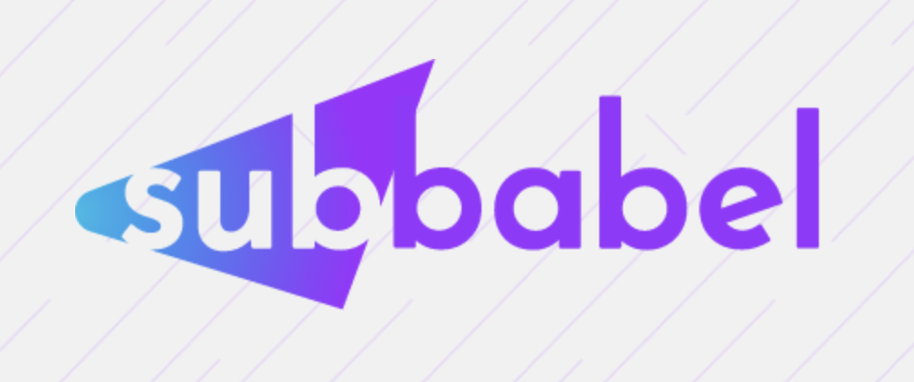
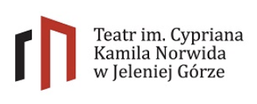
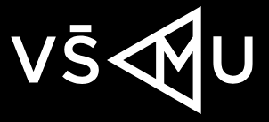
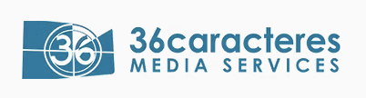
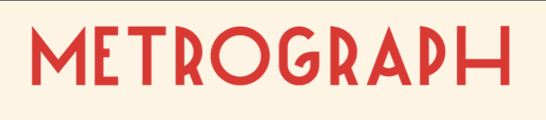
Operas, Theaters & Events
- Cinema Multisala Odeon (Pisa, Italy)
- Macerata Opera Festival (Italy)
- TEDx Toulouse (France)
- Finger Lakes Opera (State University of New York, USA)
- Opera Curlew River (Lírica Lado B, Argentina)
- Teatr Narodowy (Warszawa, Poland)
- Theater Osnabrück (Frankfurt, Germany)
- Les Cinémas du Grütli (Genève, Switzerland)
- Walnut Street Theatre (Philadelphia, USA)
- Film Forum (New York, USA)
- Frascati Theater (Amsterdam, Netherlands)
- Teatr Śląski (Katowice, Poland)
- Teatr Norwida (Jelenia Góra, Poland)
- Kinodvor (Ljubljana, Slovenia)
- Brooklyn Academy of Music (New York City, USA)
- Cinema Akil (Dubai)
- La Grange, Centre Arts et Sciences / UNIL (Switzerland)
Companies & Organizations
- Le Joli Mai (France)
- Fila13 (Barcelona, Spain)
- Lycée Français Sainte Pulchérie (Istanbul, Turkey)
- Racti Production (Lebanon)
- Filmoteca UNAM (Mexico)
- Gutek Film (Poland)
- CALF Studio (Japan)
- Sens Dessus Dessous (France)
- MultiSignes (Spain)
- Lab 80 (Italy)
- Cinémathèque Québécoise (Québec, Canada)
- French Institute Alliance Française (New York, USA)
- SudTitles (Roma, Italy)
- Favoriz Productions (France)
- Institut Français du Vietnam
- National Audiovisual Institute (Finland)
- Harvard Faculty of Arts & Sciences (USA)
- Fundacja Katarynka (Wrocław, Poland)
- Academy of Performing Arts in Bratislava
- 24Frame Kinoprojektion (Hamburg, Germany)
- Iguale Accessibility Communication (São Paulo, Brazil)
- Subbabel (Las Palmas, Spain)
- Hein?! Subtitles (Porto, Portugal)
- Metrograph (New York, USA)
Cinema Festivals
- Lisbon Arab Film Festival (LAFF) (since 2024)
- Festival Courtmétrange (since 2024)
- Cinematik Film Festival (since 2023)
- Festival de Cine Fantástico de Bilbao (since 2023)
- Curtas Vila do Conde (since 2012)
- Monstra Festival, Portugal (2020)
- Festival Internacional Cervantino, Mexico (2019)
- El Gouna Film Festival, Egypt (2019)
- Lucca Film Festival, Italy (2019)
- American Film Fest, Spain (2019)
- Cineteca di Bologna, Italy (2018)
- Doclisboa, Portugal (2018)
- Tallinn Black Nights Film Festival, Estonia (2015)
- Sicilia Queer, Italy (2015)
- Bergamo Film Meeting, Italy (2015)
- Olhar de Cinema, Brazil (2015)
- Cinélatino de Toulouse, France (2013, 2012, 2011)
- Résistances à Foix, France (2013, 2012)
- Transilvania International Film Festival, Romania (2014)
- Festival Cine sordo, Ecuador (2012)
- Festival International du film d'Amiens (2012, 2011)
- Festival de Cinéma d'Amérique Latine de Biarritz (2011)
{kind=link}
{kind=link}
{kind=link}
{kind=link}
Subtitles for Film Festivals
Subtivals became a very popular software at cinema festivals, not only for international captioning but also for accessibility.
Projecting real-time electronic subtitles is also known as soft-titling, surtitling, or supertitling. It consists in showing virtual subtitles above the projected movie.
{kind=link}
{kind=link}
{kind=link}
{kind=link}
{kind=link}
{kind=link}
{kind=link}
{kind=link}
{kind=link}
{kind=link}
One-click installers
Mac OS X
- Help and support
- Unlimited computers
- Software updates
Windows 10/11/12
- Help and support
- Unlimited computers
- Software updates
Note: Subtivals remains a Free and Open Source Software, released under the GNU Public License.
We sell the one-click installers on proprietary operating systems to finance development and promote GNU/Linux!